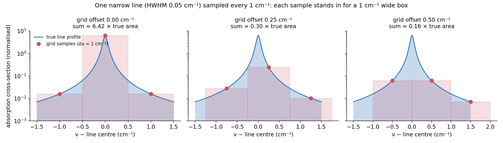
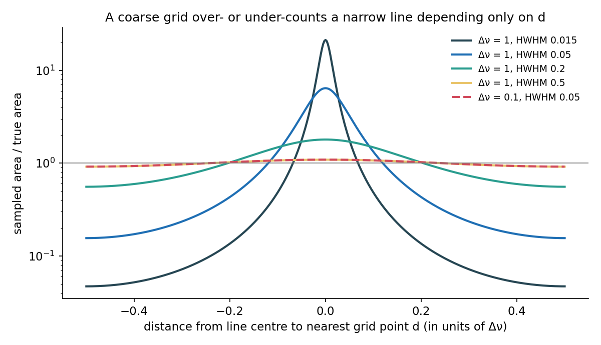
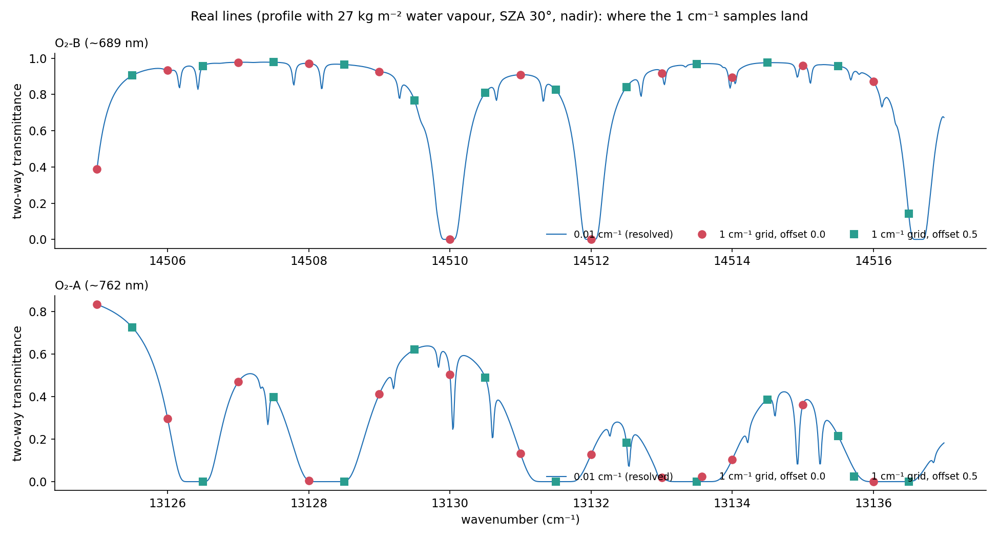
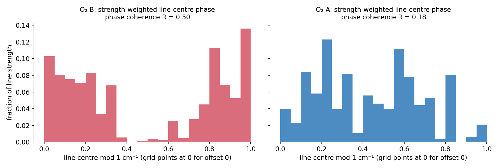
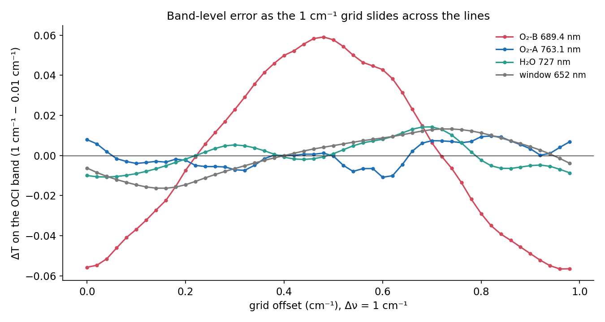
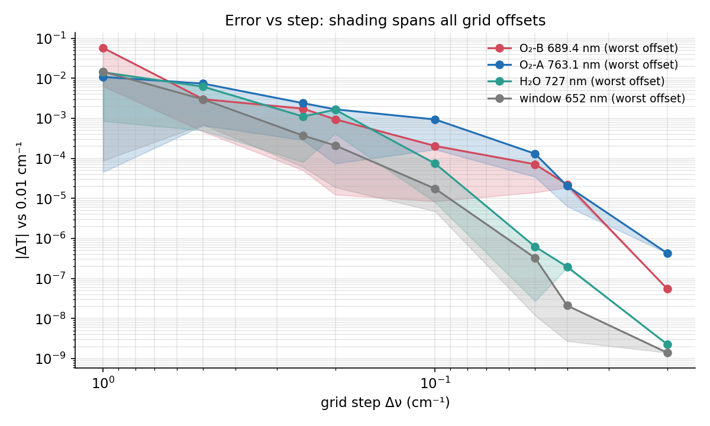
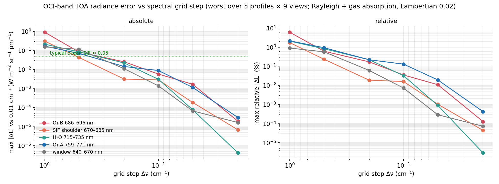

Why a coarse spectral grid gets O₂‑B wrong
The surrogate TOA spectra were computed line by line on a 1 cm⁻¹ wavenumber grid. O₂ and H₂O lines are only 0.03–0.1 cm⁻¹ wide, so each grid point either lands on a line core or misses it. Where the points land is set by the grid's starting wavenumber, the grid offset. This page shows how that offset decides the error, and why O₂‑B happens to be the band where it does the most damage.
What the RT is approximating
Each OCI band value is a response‑weighted average of the high‑resolution spectrum over roughly 100 cm⁻¹. The RT replaces that integral by a sum over grid points spaced Δν apart, starting at ν₀:
The sum is accurate only if the samples see the spectrum fairly. τ(ν) is a forest of spikes about 2 cm⁻¹ apart and 0.03–0.1 cm⁻¹ wide, so a 1 cm⁻¹ grid is much coarser than the lines it is trying to average.
One line, one grid
Each sample effectively stands in for a box Δν wide. For a narrow line that box is either far too tall or far too short. What decides it is d, the distance from the line centre to the nearest grid point.


Real O₂ lines and where the samples fall
The same thing happens in the real spectrum. In O₂‑B the strongest lines sit almost exactly on integer wavenumbers, for example at 14510.0 and 14512.0 cm⁻¹. With the surrogate grid, which starts at 12820 cm⁻¹, the offset‑0 samples land on those cores. Shift the grid by half a step and every sample falls between them.

Why the errors add up in O₂‑B and cancel in O₂‑A
A single mis‑sampled line is harmless if its neighbours are mis‑sampled the other way. That depends on whether line centres share the same position relative to the grid. Plotting each line centre modulo 1 cm⁻¹, weighted by line strength, shows the difference directly.


Saturation also protects O₂‑A. Its lines are about 15× stronger, so their cores are already black along the path whether or not a sample hits them. Most of the band's absorption comes from broad, slowly varying pressure‑broadened wings, which a coarse grid samples well enough. O₂‑B's weaker lines keep most of their absorption in narrow cores, the part a coarse grid either catches or misses entirely.
How fine is fine enough
The rule is that the grid step must be comparable to the line half‑width, about 0.015 cm⁻¹ for Doppler and 0.05 cm⁻¹ for pressure broadening near the surface. Then every line is sampled across its profile and the offset no longer matters.


| Grid step (cm⁻¹) | O₂‑B 686–696 | SIF shoulder 670–685 | H₂O 715–735 | O₂‑A 759–771 | Window 640–670 |
|---|---|---|---|---|---|
| 1 (surrogates) | 0.91 (6.1%) | 0.31 (1.7%) | 0.21 (2.1%) | 0.17 (2.1%) | 0.15 (0.9%) |
| 0.5 | 0.083 | 0.043 | 0.085 | 0.070 | 0.115 |
| 0.2 | 0.025 | 0.0032 | 0.022 | 0.014 | 0.011 |
| 0.1 | 0.0058 | 0.0029 | 0.0031 | 0.0089 | 0.0014 |
| 0.05 | 0.0017 | 0.00019 | 0.00008 | 0.0011 | 0.00007 |
| 0.02 | 0.00002 | 0.000007 | 0.0000004 | 0.00003 | 0.00002 |
Maximum |ΔL| against the 0.01 cm⁻¹ reference, W m⁻² sr⁻¹ µm⁻¹. Red marks errors above 0.05.
What this means for the surrogates
- At 1 cm⁻¹ the spectral‑sampling error is larger than the SIF signal itself, and it sits exactly around the SIF peak: on the 670–675 nm shoulder and the O₂‑B edge at 682–690 nm.
- The error is a fixed spectral pattern, not noise. The retrieval's PCs come from 0.01 cm⁻¹ cross‑sections and cannot reproduce it, so it must be absorbed by the polynomial, the PCs or SIF.
- Which band suffers, and with what sign, is an accident of the grid's starting wavenumber. A different start would move the large error elsewhere.
- Regenerating at 0.02 cm⁻¹ (exact) or 0.05 cm⁻¹ (below about 0.002) costs little. On the GPU a full 0.01 cm⁻¹ RT took about 2.3 minutes per profile, similar to 1 cm⁻¹, because aerosol setup dominates. Fine grids need the RT split into spectral chunks to fit in GPU memory.